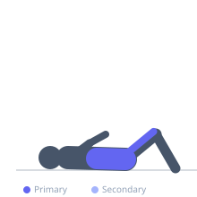

Exercise guide / Captain's Chair Leg Raise
Captain's Chair Leg Raise
The captain's chair straight-leg raise extends the legs fully during the raise, dramatically increasing the lever arm compared to a knee raise and imposing a significantly greater demand on both the rectus abdominis and hip flexors. The long-lever position requires the athlete to control a larger moment of force and recruit more of the lower rectus abdominis to posteriorly tilt the pelvis at the top of the movement. It is a more advanced progression from the knee raise on the same station.
Primary muscles
iliacus
psoas major
rectus abdominis
Secondary muscles
rectus femoris
internal oblique
Stabilizers
deltoid anterior
triceps lateral head
Equipment
Dip Bars / Dip Station


Starting position
- Mount the captain's chair with forearms on the pads and back against the pad. Legs hang straight below the body.
Setup
- Ensure the shoulder pads are positioned to allow the arms to support bodyweight without shrugging the shoulders excessively.
Steps
- Step 1: Begin with legs hanging straight. Engage the core.
- Step 2: Keeping the legs straight (or with a very slight bend at the knees), raise both legs upward until the thighs are at or above horizontal.
- Step 3: At the top, curl the pelvis slightly forward (posterior tilt) to maximally engage the lower abs.
- Step 4: Lower the legs slowly and with full control back to the hanging position.
- Step 5: Avoid swinging — maintain tension throughout the entire set.
Coaching cues
- Keep legs straight and squeeze the quads
- Curl the tailbone up at the top
- Resist gravity on the way down
Breathing
- Exhale as legs rise. Inhale on the controlled descent.
Range of motion
- Legs from full hang to horizontal or above. Posterior pelvic tilt at the top is essential for full ab engagement.
Tempo
- 3-1-3-0. Fully controlled. No kipping or swinging.
Common mistakes
- Swinging the legs with momentum rather than controlling the full range
- Only raising legs to 45° and missing the upper rectus abdominis contribution from posterior pelvic tilt at the top
Safety
- Avoid if hip flexor tightness causes anterior pelvic tilt to worsen — use knee raises instead
Training
- strength: 8–15 reps
- hypertrophy: 12–20 reps
- hypertrophy: 3–4 sets
- Rest: {'hypertrophy': 60}